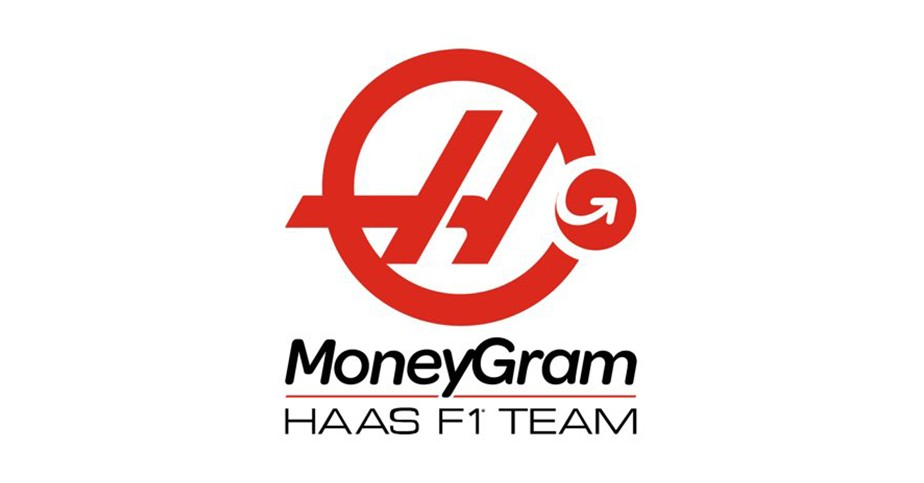

Un equipo estadounidense
Haas F1 Team es una escudería estadounidense fundada por el empresario Gene Haas. El equipo fue creado con el objetivo de llevar nuevamente una estructura estadounidense a la máxima categoría del automovilismo.
El nacimiento de Haas F1 Team
Gene Haas, fundador de Haas Automation y propietario de un equipo de NASCAR, decidió entrar en la Fórmula 1. Después de varios años de preparación, Haas debutó oficialmente en el Campeonato Mundial de Fórmula 1 durante la temporada 2016.
Debut en 2016
Haas tuvo un debut bastante competitivo para ser un equipo nuevo. Durante su primera temporada utilizó motores Ferrari y estableció una relación técnica con la escudería italiana para obtener diferentes componentes.
Los pilotos que representaron al equipo en su primera temporada fueron Romain Grosjean y Esteban Gutiérrez. Haas consiguió sumar puntos desde sus primeras carreras y terminó la temporada en una posición destacada para una escudería debutante.
La etapa de Romain Grosjean
Romain Grosjean se convirtió en uno de los pilotos más importantes de los primeros años de Haas. El piloto francés consiguió varios resultados destacados y ayudó al equipo a consolidarse dentro de la parrilla.
Durante las primeras temporadas, Haas demostró que podía competir por puntos frente a equipos con mayor experiencia y presupuesto.
El crecimiento del equipo
En 2018, Haas consiguió uno de sus mejores resultados en el Campeonato de Constructores. El equipo terminó la temporada en quinta posición, convirtiéndose en una de las escuderías más competitivas de la zona media.
Kevin Magnussen también tuvo un papel importante durante esta etapa. El piloto danés formó junto a Grosjean una pareja que permaneció varios años dentro del equipo.
Una etapa complicada
Después de sus buenos resultados iniciales, Haas comenzó a tener dificultades para mantener su rendimiento. La temporada 2020 fue especialmente complicada para el equipo, tanto por sus problemas de competitividad como por las dificultades económicas generadas durante ese período.
La temporada 2021
En 2021, Haas decidió apostar por una nueva generación de pilotos. Mick Schumacher, hijo del siete veces campeón mundial Michael Schumacher, llegó al equipo acompañado por Nikita Mazepin.
La temporada fue complicada desde el punto de vista deportivo y Haas terminó sin conseguir puntos en el Campeonato de Constructores. Sin embargo, el equipo continuó trabajando para preparar un monoplaza más competitivo para las siguientes temporadas.
El regreso de Kevin Magnussen
En 2022, Kevin Magnussen regresó a Haas después de que el equipo decidiera cambiar su alineación de pilotos. El danés consiguió un resultado histórico al obtener la primera pole position de Haas en la Fórmula 1 durante el Gran Premio de Brasil de 2022.
Esta pole fue uno de los momentos más importantes en la historia de la escudería, demostrando que Haas podía competir ocasionalmente en las primeras posiciones.
Nico Hülkenberg
En 2023, Nico Hülkenberg regresó a la Fórmula 1 como piloto titular de Haas junto a Kevin Magnussen. El piloto alemán aportó experiencia al equipo y consiguió varias actuaciones destacadas durante la temporada.
Una nueva etapa con Esteban Ocon
Para la temporada 2025, Haas incorporó nuevamente a Esteban Ocon, quien ya había formado parte de la historia inicial del equipo como piloto reserva. Ocon pasó a competir como piloto titular junto a Oliver Bearman.
Oliver Bearman y el futuro
Oliver Bearman representa una de las apuestas del equipo hacia el futuro. El joven piloto británico llegó a Haas después de haber demostrado su velocidad en categorías inferiores y de haber competido en Fórmula 1 como piloto sustituto.
La combinación entre la experiencia de Ocon y el potencial de Bearman busca ayudar a Haas a avanzar en la parrilla y conseguir mejores resultados en las próximas temporadas.
Haas en la actualidad
Haas continúa siendo uno de los equipos más pequeños de la Fórmula 1, pero ha conseguido mantenerse dentro de la categoría desde su debut en 2016. Su modelo de trabajo se ha basado en establecer acuerdos técnicos con otros fabricantes para reducir costes y competir de manera eficiente.
Hasta el momento, Haas no ha conseguido una victoria ni un Campeonato Mundial de Constructores o Pilotos. Sin embargo, la escudería ha logrado importantes resultados, incluyendo su quinta posición en el Campeonato de Constructores de 2018 y su primera pole position en 2022.
El objetivo de Haas
El principal objetivo de Haas es seguir creciendo dentro de la Fórmula 1, mejorar el desarrollo de sus monoplazas y convertirse en un equipo capaz de luchar regularmente por los puntos y las posiciones delanteras.